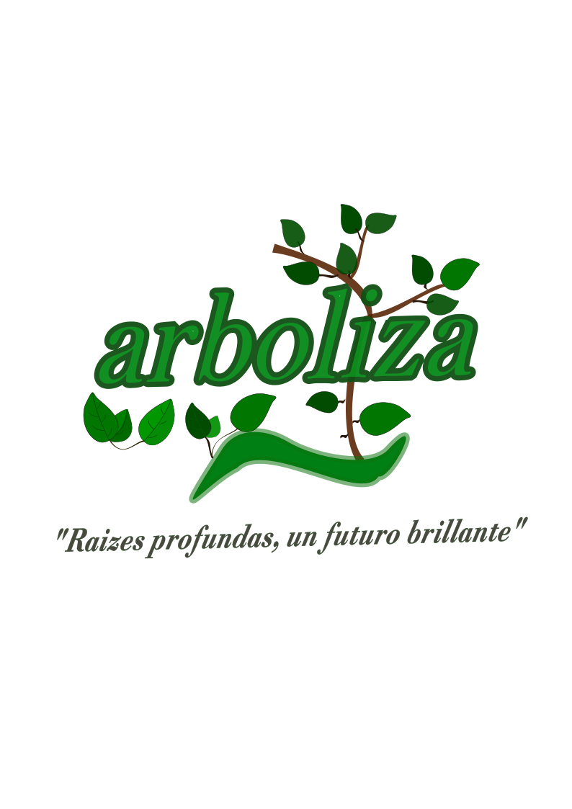
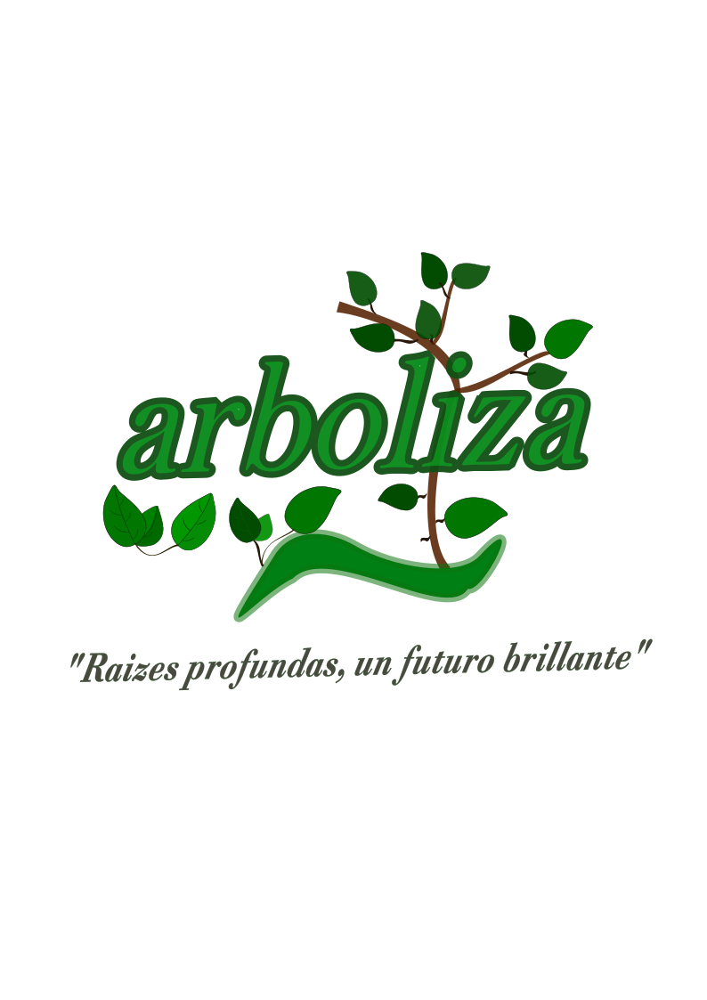
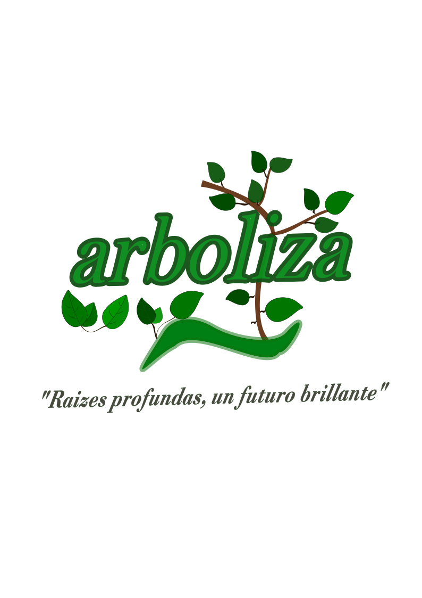
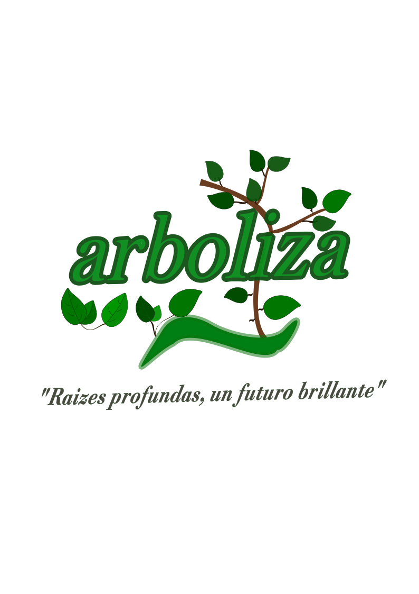

pagina de Reforestacion

pagina de Reforestacion Elaborado por José Abdiel Andrés Irineo

 
pagina de Reforestacion

pagina de Reforestacion Elaborado por José Abdiel Andrés Irineo
Mejora la calidad del aire: Los árboles absorben CO₂ y liberan oxígeno, purificando el aire.
Protege el suelo: Las raíces evitan la erosión y mantienen la fertilidad del suelo.
Regula el clima: Los bosques estabilizan la temperatura y atraen lluvias.
Conserva la biodiversidad: Crea hábitats para especies animales y vegetales.
Mejora el paisaje: Embellece entornos naturales y urbanos.
Fomenta la conciencia ambiental: Sensibiliza desde edades tempranas.
Desarrolla valores: Promueve compromiso y trabajo en equipo.
Apoya el aprendizaje práctico: Integra conocimientos científicos de forma vivencial.
Estimula pensamiento crítico: Fomenta la solución de problemas reales.
Fortalece la conexión con la naturaleza: Desarrolla empatía por el entorno.
La reforestación restaura áreas degradadas, mejora la calidad del aire, conserva el agua y promueve biodiversidad.
En 2021 se restauraron 19,389 hectáreas; entre 2019 y 2021, más de 121,000 hectáreas. México posee 138.7 millones de hectáreas forestales, el 70.6% de su territorio.
A nivel mundial, hay más de 700 millones de hectáreas protegidas y se han sumado 191 millones desde 1990.